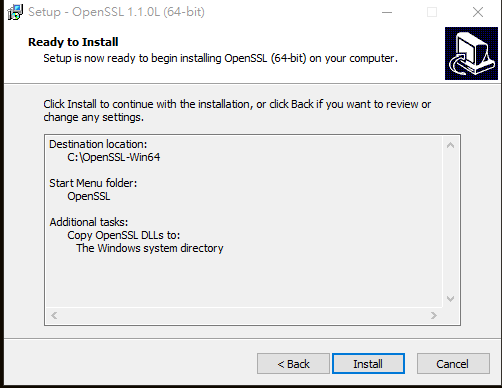

本文只依個人情況簡述申請憑證所需的基本步驟，還要更詳細節請參考
使用 SSL For Free 產生 Let’s Encrypt SSL 憑證上傳給 IIS 站台使用
網址上的說明
例如我想對一網域名稱 http://dowebsite.hinet.com/ 升級成 https (以只考慮申請一個網域名稱，不包含子網域為例)
想要幫網站從 http 加密升級成 https 的流程很複雜，
想藉用 SSL For Free 來減輕負擔，步驟如下
在 SSL For Free 頁面中填入想申請的網域名稱，只填「dowebsite.hinet.com」就好，
不須將「http://」、「www」也填進去。
然後按下「Create Free SSL Certificate」按紐
接下來，選擇手動驗證
接下來，點擊「Manually Verify Domain」按紐
接下來，依照下圖的步驟做完後取得 SSL Certificate
1、下載驗證檔案
下載完成後可得到類似如下沒有副檔名的驗證檔案
2、將你的驗證檔案放在網站根目錄底下的路徑裡 .\.well-known\acme-challenge 如下圖 (該名稱資料夾須自己新增)
如遇到新增資料夾問題請特別注意這一段話
「2. Create a folder in your domain named ".well-known" if it does not already exist. If you use Windows you may have to add a dot at the end of the folder name in order to create a folder with a dot at the beginning.」
或請參考 如何透過檔案總管建立 .gitignore 或 .editorconfig 等只有副檔名的檔案
3、在 windows IIS 平台上要記得先行設定 MIME類型，讓 IIS 認得沒有副檔名的驗證檔案
(個人已驗證過，跟「.well-known\acme-challenge」前面那個「.」沒關係)
設定如下
新增完成後
4、點擊如下連結來讓 SSL For Free 驗證是否可讀到你的驗證檔案
如可正常開啟那就會得到一連串的雜亂編碼。
5、確定驗證連結沒有問題後，再點選最下方的「Download SSL Certificate」，通過驗證後，SSL For Free 就會開始產生 SSL 憑證。
產生憑證後，就能看到密密麻麻的憑證檔案資訊。
不過在下在憑證之前，請先注意有著「Get Notified of Expiration」，
請先行設定一組 Email 和密碼，這個功能即你申請的憑證在過期前會自動 Email 通知你，
提醒你要記得更新憑證以免錯過有效期間。
設定好通知後，點選最下方點選「Download All SSL Certificate Files」打包所有憑證檔並下載下來。
剩下的資訊請參考
產生的憑證是 .crt 非 .pfx，IIS 平台只能使用 .pfx 憑證檔，所以這時候就需要透過工具做轉換，
我們到 OpenSSL for Windows 去下載 OpenSSL 回來，並把他安裝完成。
有時候會載不下來，所以我這邊也準備了備份檔
安裝步驟沒什麼特別的，通常都下一步下一步

安裝完後先將 ca_bundle.crt、certificate.crt、private.key 三檔案複製到 C:\OpenSSL-Win64\bin 路徑底下
我是使用 PowerShell 來執行指令，你也可以使用「命令提示字元」來執行
在 C:\OpenSSL-Win64\bin 路徑下輸入如下指令
.\openssl.exe pkcs12 -export -out certificate.pfx -inkey private.key -in certificate.crt -certfile ca_bundle.crt
過程中，OpenSSL 會要我們輸入一個保護 SSL 憑證的密碼（密碼在後面 IIS 匯入時會用到）
執行完畢後，PKCS#12 憑證檔 certificate.pfx 就會產生 (OpenSSL 這隻程式在虛擬機可能做不出 certificate.pfx)
接下來再把 certificate.pfx 憑證檔放進 IIS 站台
密碼欄位則為輸入之前使用 OpenSSL 轉檔時的保護 SSL 憑證密碼。
完成後如圖
接下來在你的站台啟用 https

啟用完成後

最後檢視你的網站是否可正常使用 https
當90天過後遇到憑證要展期怎麼辦？
別擔心，SSL FOR FREE 管理頁面有提供 renew 選項，
之後就是照先前的步驟再做一次。
參考資料：
Let’s Encrypt on IIS (use Certify the web)
Let’s Encrypt 免費 SSL 使用 IIS 安裝憑證